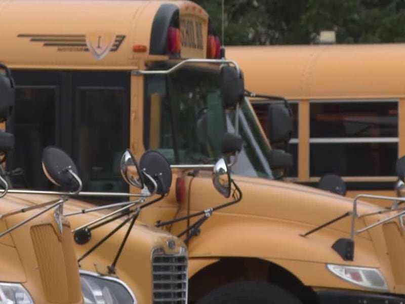
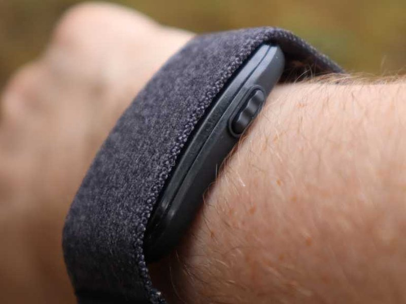

DepEd: nationwide safety drill, “Do No Harm” rewrite
8 Sep 2026
Public and private schools ran the National Simultaneous School Safety Drill last Thursday after weather and mental-health pushback delayed the August date. DepEd says guidelines now track trauma-informed, child-centered standards: advance notice, written parental consent, opt-outs, no surprise theatrics, guidance on standby. Still a lockdown-and-barricade exercise for many campuses — parents and some school heads want stronger guidance programs more than hyper-real threat sims. Context: rare PH school shootings earlier this year put safety audits, CCTV, and TeleSafe (#33733) on the same board as drills.
Open Manila Times · Open Rappler
Tennessee: bomb-threat exit, 21 kids hospitalized for heat
8 Sep 2026
Carter Middle School (Knox County) evacuated Friday on a written bomb threat. Mid/upper-90s heat advisory. At least 21 students hospitalized for heat illness — three critical. District says water and shade were provided and parents were messaged; parents dispute the timeline, cup sizes, headcounts, and hospital notifications. Sheriff still investigating the threat; no charges yet. Parent takeaway: evacuation plans need heat, hydration, and reunification as first-class risks — not afterthoughts.
Open WVLT · Open WEAU

Wisconsin: 4-year-old left alone on a hot empty bus
8 Sep 2026
Washington County Sheriff recommended charges after a Kewaskum-route driver skipped the child checkmate / walk-through; a manager who should double-check also didn’t. Child OK. Bus firm (Johnson School Bus Service) admitted multiple safety steps were skipped on day-one heat. Other parents reported delayed drop-offs and windows that wouldn’t open; at least one child arrived home overheated. Retraining and “appropriate action” promised — the checklist only works if someone actually walks the seats.
Open WBRC
Eala: Slam season done — Asiad gold next
8 Sep 2026
After Jovic ended her first US Open R32 (H2H now 0-3), Alex Eala is pointing at Aichi-Nagoya Asian Games tennis (27 Sep–3 Oct) and an improved medal vs Hangzhou bronze. Skipping Beijing WTA 1000 to wear PH colors; Singapore Open (21–27 Sep) is the bridge. Season line: first full Slam main-draw year, WTA title in Washington, World No. 18, career earnings nearing $2M. Gold in Nagoya would also stamp a direct 2028 LA Olympics path.
Open Philstar · Open Rappler
Isar Spectrum: Europe’s first private orbit
8 Sep 2026
Follow-up on Saturday’s Andøya liftoff (~20:12 UTC 5 Sep): Isar Aerospace’s Spectrum (flight 2) put five CubeSats into LEO — first privately funded European rocket to orbit, first orbital success from continental Europe. ESA European Launcher Challenge milestone cleared years early. Payloads from the DLR microlauncher competition; next rockets already in build toward a higher cadence.
Open SpaceNews · Open Ars

Cirqa review week: screenless Garmin, no forced sub
8 Sep 2026
Tech Advisor’s Sep 7 hands-on frames Garmin’s Cirqa Smart Band ($199 / £179) as the screenless Whoop alternative that doesn’t require a membership to unlock the basics — Connect+ stays optional. Battery ~10 days; HRV, training readiness, sleep in the phone app. Separately, Anatel/Indonesia/Taiwan filings for ten CIRQA size variants keep a smart-ring rumor warm; Garmin hasn’t confirmed a ring.
Open Tech Advisor · Open Notebookcheck